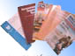
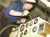
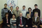
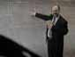
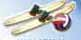
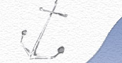
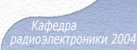

|
||||||
|
О кафедре Новости Архив новостей
Кафедра радиоэлектроники ВГАВТ основана 4 июня 2001 года. Обеспечивает подготовку студентов более чем по 25 дисциплинам специальностей:
- 16.09.05 «Техническая эксплуатация транспортного радио- оборудования» специализации:
"Радиосвязь и электронавигация морского и речного флота"
(срок обучения 5,5 лет)
"Международные информацион- ные и телекоммуникационные системы на транспорте»
(срок обучения - 5 лет)
- 18.04.04 "Эксплуатация судового электрооборудования и средств автоматики" (очное и заочное отделения)Кафедра радиоэлектроники
 Научная работа. На кафедре ведется научная работа по следующим направлениям:
- математическое моделирование и исследование сложных динамических систем;
- разработка и программная реализация интеллектуальных алгоритмов управления;
- создание концепций разработки микропроцессорных систем управления, в том числе на основе fuzzy- логики. Прикладные разработки. Сотрудниками кафедры разработаны и внедрены ряд систем контроля и управления объектами, комплексами и техническими процессами в различных отраслях промышленности. При создании систем используется современная компьютерная техника, контроллеры и элементная база ведущих производителей (Siemens, Advantech, ASP-DAS и др).  Кадровый состав. Занятия ведут шесть преподавателей, в том числе один профессор (д.т.н.), четыре доцента (к.т.н.), один старший преподаватель. Проведение занятий обеспечивают четыыре инженероа и специалист по учебно-методической работе  Дисциплины. Кафедра обеспечивает учебный процесс по следующим направлениям:
- физические основы электроники и радиоэлектронные компоненты;
- аналоговая и цифровая схемотехники;
- микропроцессорные системы и их элементная база;
- конструирование, обслуживание и эксплуатация судовой радиоэлектронной аппаратуры; - судовые радиотехнические средства и комплексы.
Кафедра организует проведение учебной и производственных практик для студентов 2, 3, 4, курсов.
Очная форма обучения Заочная форма обучения Лаборатории. Обучение проводится впяти лабораториях, оборудованных современной техникой:
- лаборатории "Компьютерных технологий моделирования и проектирования радиоэлектронной аппаратуры"
- лаборатории "Микропроцессорных средств и систем"
- лаборатории "Радиосвязи и радионавигации"
- лаборатории "Радиоэлектроники и радиоизмерений
- лаборатории "Систем связи"Методическая работа. На кафедре разработан и опубликован широкий спектр учебно-методических пособий по различным дисциплинам, обеспечивающий их изучение, выполнение лабораторных работ и курсовых проектов.  Отдых. Сотрудники кафедры любят и умеют отдыхать.
Новости. каф. радиоэлектроники 29.11.2012 состоялся государственный экзамен по специальности 160905 "Техническая эксплуатация транспортного радиооборудования" Результаты:
4 студента на сдали экзамен на "4"
6 студентов на "3"
Кафедра радиоэлектроники заключила соглашение об использовании ПО Bricscad™ и теперь имеет возможность устанавливать это прогрaммное обеспечение в рамках академической лицензии.
Bricscad™ -- лидер среди альтернативных DWG САПР платформ, предлагает полный набор функций для профессиональных пользователей и имеет полную совместимость с AutoCAD ® 2012. Для государственных учебных заведений, входящих в систему Министерства образования Российской Федерации, ПО Bricscad™ предоставляется бесплатно.
http://www.brics-cad.ru/27 марта 2012 г. в 13-20 в актовом зале академии по традиции отмечался День радиста! Праздник был организован преподавателями и сотрудниками нашей кафедры при активном участии студентов.
07.02.2012 На кафедре радиоэлектроники состоялась защита дипломных проектов студентов, обучавшихся по специальности 160905 "Техническая эксплуатация транспортного радиооборудования" для специализации "Радиосвязь и электронавигация морского и речного флота". Результаты.
В настоящее время среди студентов специальности "Техническая эксплуатация транспортного радиооборудования" проводится конкурс на лучшую группу. Итоги конкурса будут подведены на традиционном праздновании Дня радиста! Условия конкурса.

Оптимальное
разрешение 1024 на 768 точек
Кафедра радиоэлектроники 2004г.
vgavt-radio@mail.ru
Design by Paikov "beatlove@rambler.ru"
|  | |
|  |